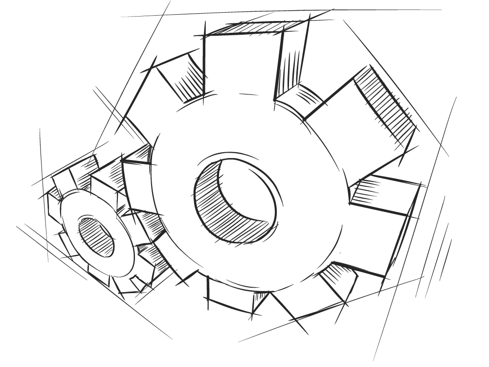

Himanshu Prajapati
Traditional approach of async programming
Callback
a function passed as an argument
callback hell
//callback
function A(){}
function B(callbackFn){
setTimeout(()=> callbackFn(), 5000);
}
B(A);
Promises
runs only once
eager
can't be cancelled (resolve/error)
new Promise((resolve, error) => {
setTimeout(() =>
resolve('Promise resolved'), 4000);
});
RxJS
"a library for reactive programming using Observables, to make it easier to compose asynchronous or
callback-based code"
for e.g. Asynchronous
Network calls
DOM Events
Animation
Provides
One Core Type : Observable
Satellites Type
ObserverSchedulers
Schedulers
Subjects
Operators


Concepts
Observable
a function that creates an observer and attaches it to the source
e.g. events, http request, etc
Observer
an object with next(), error() and complete() methods
get called when there is an interaction/event occurs
Subscription
represents the execution of an Observable
to execute the observable we need to subscribe to it
also be used to cancel the Subscription
Operators
a pure function
takes an observable as input and the returns the observable as output
Arrays functions
map, filter, reduce, evert, etc.
Subject
an observable that can multicast i.e. talk to many
observers
How to install?
node npm install rxjs
CDN
Observable
Executed when have atleast a one observer
Creates a copy of data for each observer
Uni-directional (obserer cannot assign value to observable)
Create Observable
import { Observable } from 'rxjs';
let observable = Observable.create(
function(observer) {
observer.next(1);
}
);
observable.subscribe(value => console.log(value));
Subject
Special type of an Observable
An event emitter
Used to multicast
Same data gets shared between observers
Bi-directional (obserer can assign values observable)
import { Subject } from 'rxjs';
let subject = new Subject();
subject.subscribe(value => console.log(value));
subject.next(1);
subject.subscribe(value => console.log(value));
subject.next(2);
Operators
Simple pure functions
Deals with collections
To use operator we need to use pipe
let obs = of(1,2,3);
obs.pipe(
operator1(),
operator2(),
operator3(),
operator3(),
)
.subscribe(...);
import { of } from 'rxjs';
import { map, reduce, filter } from 'rxjs/operators';
let numbers = of(1, 2, 3, 4, 5, 6, 7, 8, 9, 10);
numbers.pipe(
filter(x => x % 2 === 0),
reduce((acc, one) => acc + one, 0)
).subscribe(x => console.log(x));
Practice